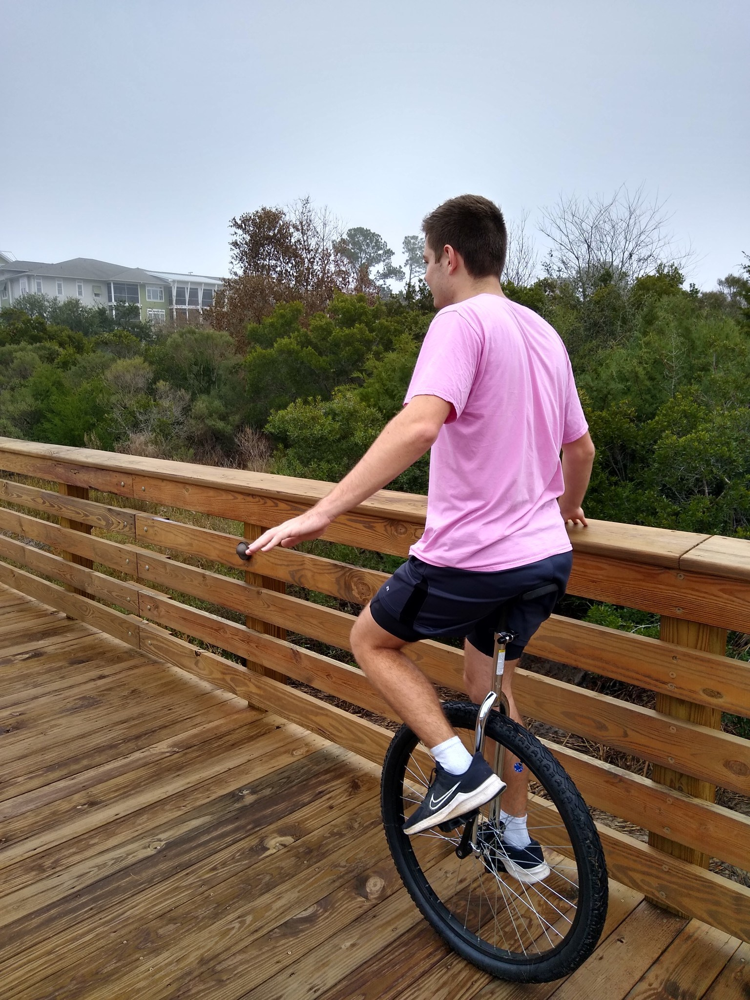
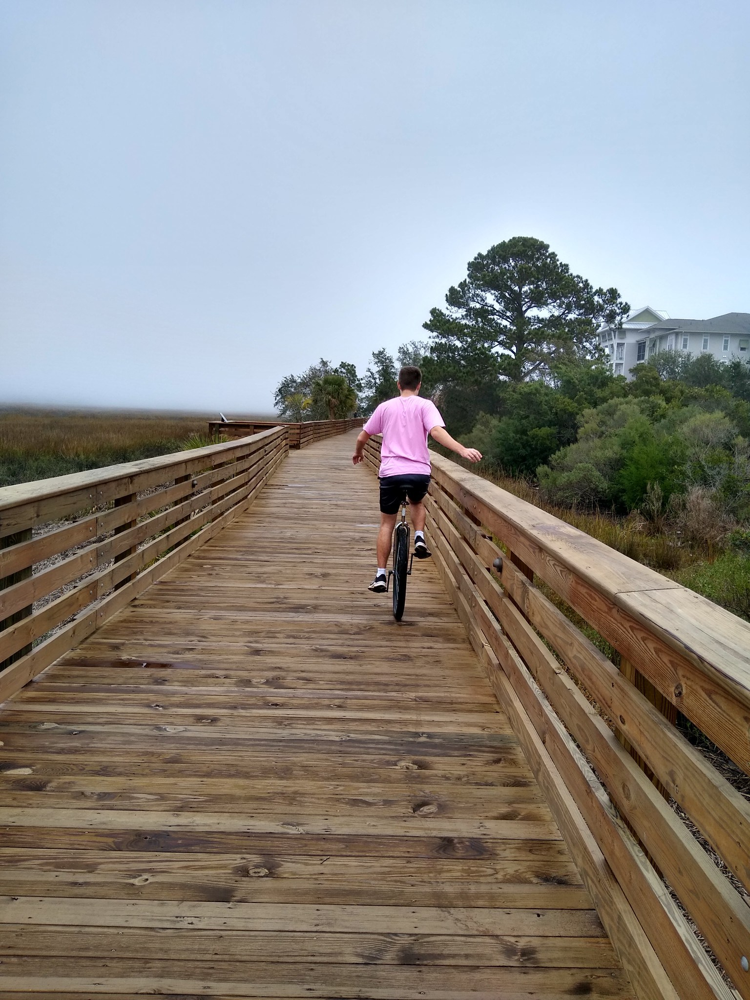

Unicycle
Description
Tutorial
Step 1

Step 2
Step 3
Step 4

Tips
- If you have a friend, they can offer an arm for you to hold on to as you ride. Work on lessening the weight you put on that arm until you barely need them at all.
- If you have a friend that can ride, holding hands and riding is a great way to practice. You can both improve your stability as you go. Sadly, if your friend is a master rider, it won't be much different from just holding on to an arm.